Chamber of Reflection, Vol. I
- Libro d’artista, 15 × 18 cm
- Stampa digitale su carta e carta trasparente
Chamber of Reflection è il primo di una serie di diari di viaggio e nasce dal desiderio di esplorare un luogo non soltanto come destinazione, ma come spazio attraversato da una propria attualità politica, sociale e storica. Il progetto si interroga su cosa significhi viaggiare oggi e su quanto siamo realmente consapevoli dei contesti che attraversiamo, spesso osservati attraverso uno sguardo turistico che tende a isolare l'esperienza personale dalle dinamiche che li caratterizzano.
Il libro si articola in due capitoli dedicati a due luoghi differenti: New York City, Stati Uniti, e Novoselitsa, Ucraina, città appartenenti a due Paesi che, seppur in modi diversi, si trovano coinvolti in una condizione di guerra.
Come sedimentano nella nostra quotidianità le notizie che apprendiamo? In che modo bombardamenti, decisioni politiche, disastri ambientali e conflitti convivono con i gesti più ordinari della vita di ogni giorno?
Chamber of Reflection intreccia due dimensioni parallele: quella intima e soggettiva dell'esperienza di viaggio e quella mediata dell'attualità, costruita attraverso il continuo flusso di notizie. Nel tentativo di restare a galla in questa sovrabbondanza di informazioni, il lavoro riflette sul privilegio della distanza dal conflitto e su come gli eventi vengano inevitabilmente filtrati dall'esperienza individuale.
Ogni evento attraversa il mio sguardo, viene reinterpretato e assimilato soggettivamente: il diario diventa così uno spazio in cui esperienza personale e realtà condivisa convivono, mettendo in discussione il nostro modo di guardare, ricordare e abitare i luoghi.
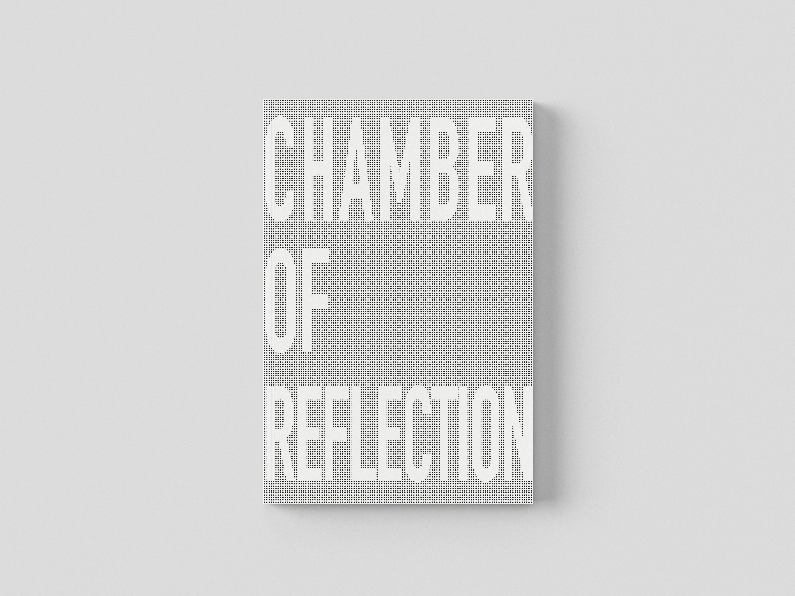
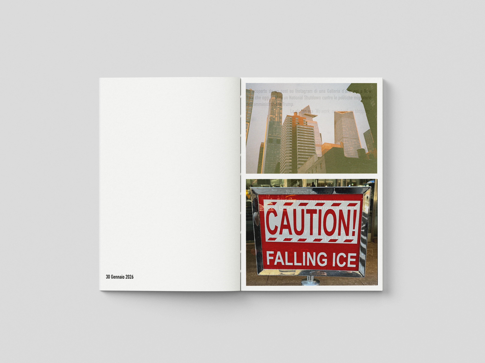
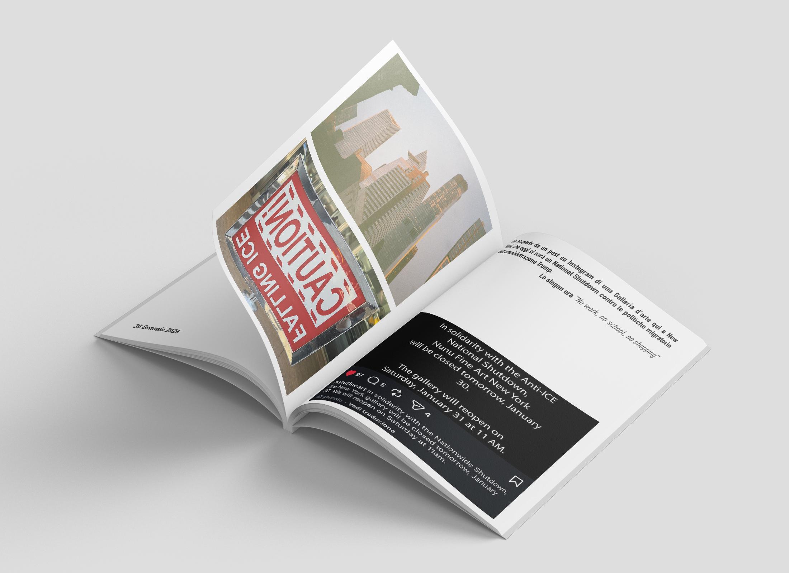
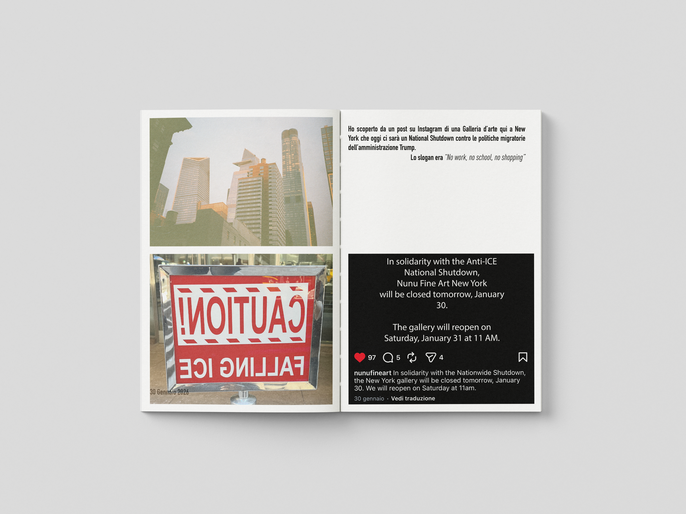
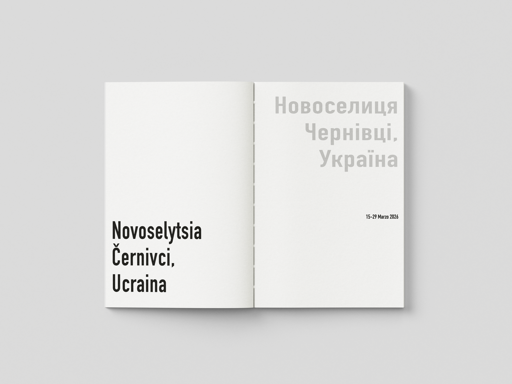
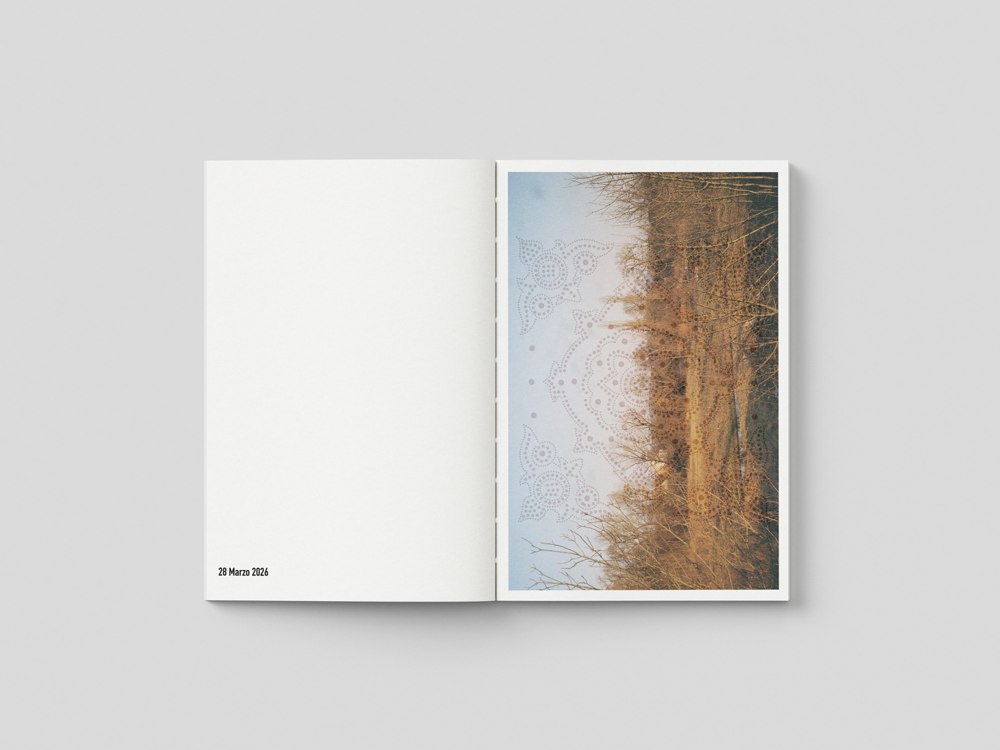
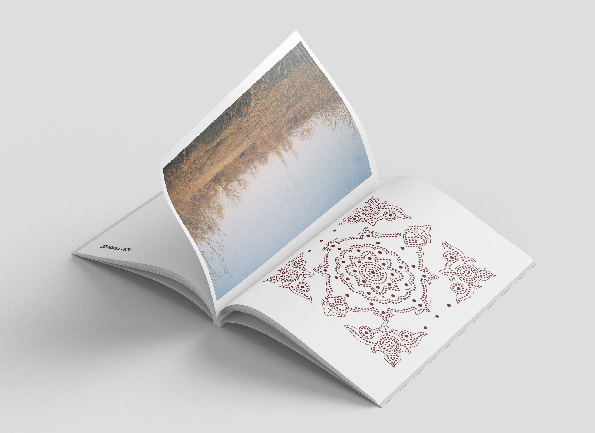
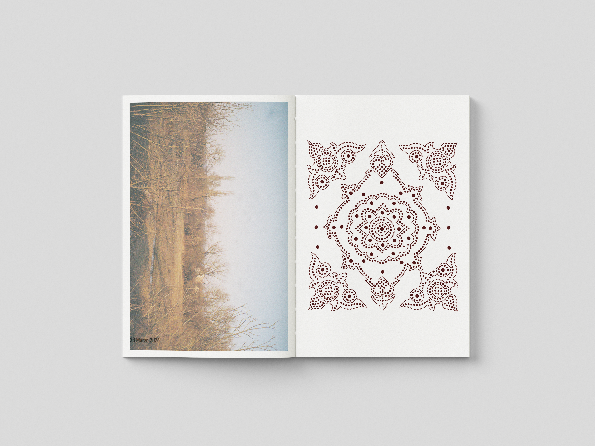
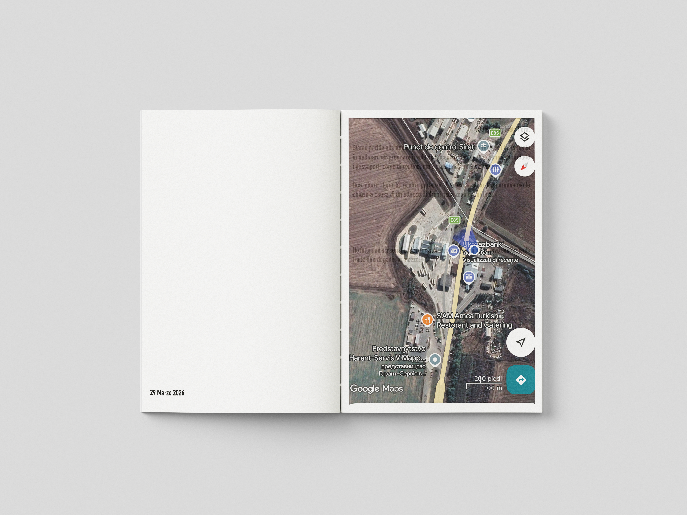
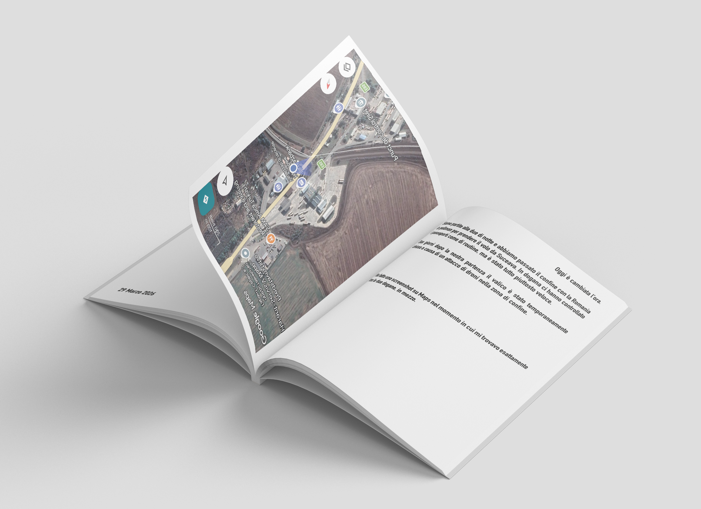
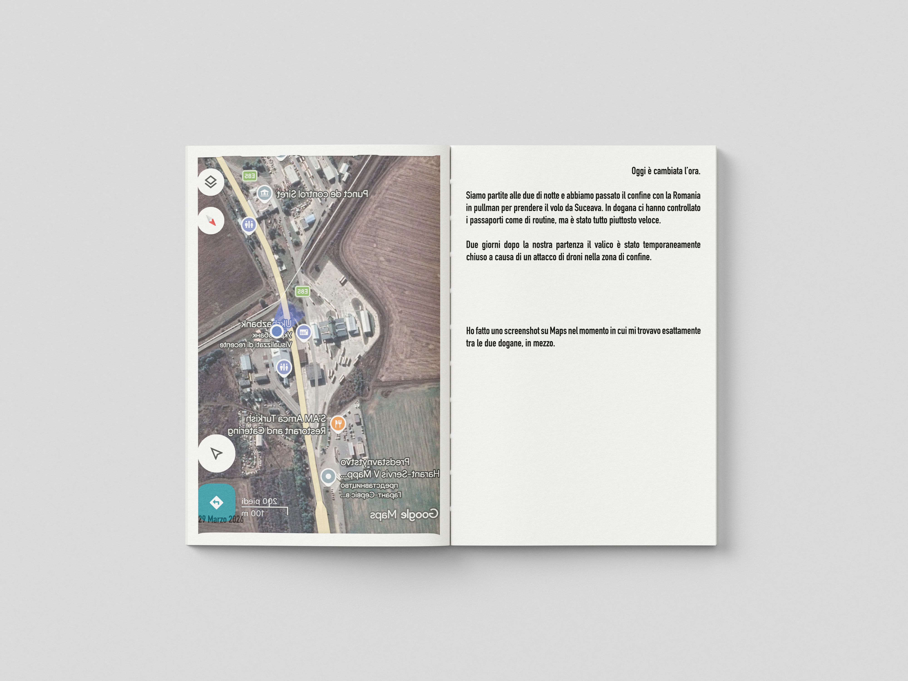
Esposta a Tumbleweed- quando le mappe non creano imperi (2026), Società Umanitaria, Milano.